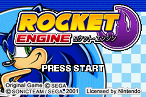
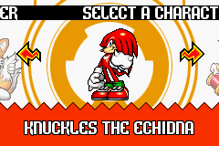
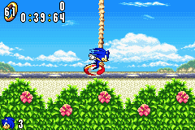
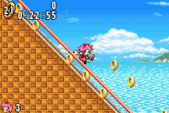
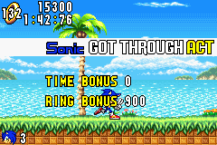
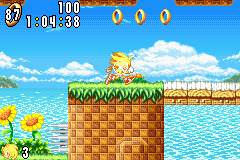

The Rocket Engine is a Sonic Engine (or Framework if you really wanna be annoying about it) for GameMaker: Studio 1 based on the Sonic Advance series, using the Harinezumi Engine as a template, that I've been working on for quite a while now.
Features:
-
Mostly Advance 1-accurate physics.
-
4 playable characters: Sonic, Tails, Knuckles and Amy.
-
All characters have their respective attacks and maneuvers.
-
With 7 emeralds, Super Sonic is playable.
-
Background parallax system.
-
Simple to understand: Based on Harinezumi, which is based on previous GameMaker Sonic engines, so the structure of the engine is the same.
-
Good base for advance style games.
Screenshots:



Bugs / Glitches that I'm aware of:
- The result screen tile/background warping, it's minor but I know it's noticeable. It can be fixed but I'm not entirely sure of how and it's just a test level so I'm sure if one were to use it normally, they could figure out a solution to make it work better.
- The physics / some of the attacks may not be entirely accurate, but I'm still not a GameMaker expert, so please excuse me.
- Grinding isn't the most functional...
Rocket Credits:
- Coding: SoniKast, A.NB, Soup Taels
- Graphics: SoniKast, WizToad, Dimps, Taymen The Hedgehog, Domenico, Moe
- Beta Testers: BriceTAS, Illias3000 / NexusShack
- Gimmicks: SoniKast, PVic, A.NB, Chasman86
- Physics: SoniKast
- Level Design: Dimps
- Music: SpeedVGM
- Sounds: Sonic Team, Dimps, rips by Mr. Lange, SoniKast and BlazefireLP
- Special thanks to A.NB (for genuinely 40% of the engine lol), the Sonic Technical Institute (character select code), Soup Taels (fixing Knuckles's swimming, really helped out in a pinch), Noah Copeland (Camera help), Alumae (probably wouldn't have continued this far if it werent for you), Damizean and RogueYoshi (for the very foundation of the engine) and SEGA for Sonic.
Download: